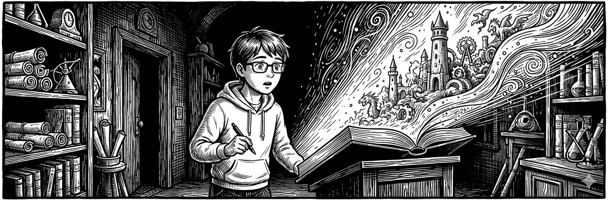

行動経済学 × SNSビジネスの視点で、売れる「考え方の型」を綴ります。
とーるです。僕はちょこちょこと喫茶店モーニング行ってある日喫茶店でYouTubeでも見ようとした時のこと。動画をタップした瞬間、画面の真ん中で何かがグルグルと回り始めました。
とーるです。今回は「ふと」コンビニで思ったことを書いていこうと思います。くだらない発想なんですが、、、 コンビニのレジ横で、ふと思ったんです。
とーるです！昨日、久しぶりに服を買いに行ったんです。某おしゃれセレクトショップに。で、そこにいた店員さんがね、 もう、後光が差すくらい「いい人」だったんですよ。
今回は、多くの起業初心者さんがつまずくテーマ── 「 言語化ってどうすればできるの ？」 について、僕流にわかりやすく（多分）噛み砕いてお届けします。
今回もズバッ！といきます。「今これが稼げます！」という話に飛びつくと、ほぼ全員あとで苦しむよ。というテーマです。SNSを数年見てきた方なら、きっと心当たりがあるはずです。
『売れる投稿』よりも先に、作っておくべきもの 「SNSで発信して、講座を作って、やっと売上が上がった！」 そんな声を聞くと、僕も昔の自分を思い出します。
今回は少し辛口です！あまり辛口のことを発信すると感情派の人には毛嫌いされます、、、 ですが論理的な思考には“面白い”って言われます笑 テーマは── 「SNSでよく見る“その販売、ちょっと危ないかも？
今日は「売れないコーチ・コンサルほど“結果”を売ってしまう」という話をしたいと思います。行動経済学の視点から見ても、これは人が“行動しにくくなる”典型的なセールスパターンです。
とーるです。関連コラムはこちらです ➔ #27：インスタ集客マネーゲームの崩壊 ➔ #28：“便利さ”が生んだ新たな幻想 ➔ #29：SNS集客マネーゲームとAI収益化マネーゲームの共通点
とーるです。今回も前回、前々回の続きです！➔#27：インスタ集客マネーゲームの崩壊 ➔#28：“便利さ”が生んだ新たな幻想
とーるです。今回は前回の続きです！➔ #27：インスタ集客マネーゲームの崩壊 SNS集客マネーゲームが終息したあと、静かに、しかし確実に新しい波がやってきました。
とーるです。いやぁぁぁぁぁぁぁぁぁぁ またまた見かけますよね。今回は結構ダークなお話です。２，３年前、Instagramを中心に「SNSで稼ぐ」「集客コンサルで自由になる」という発信が爆発的に増えてま